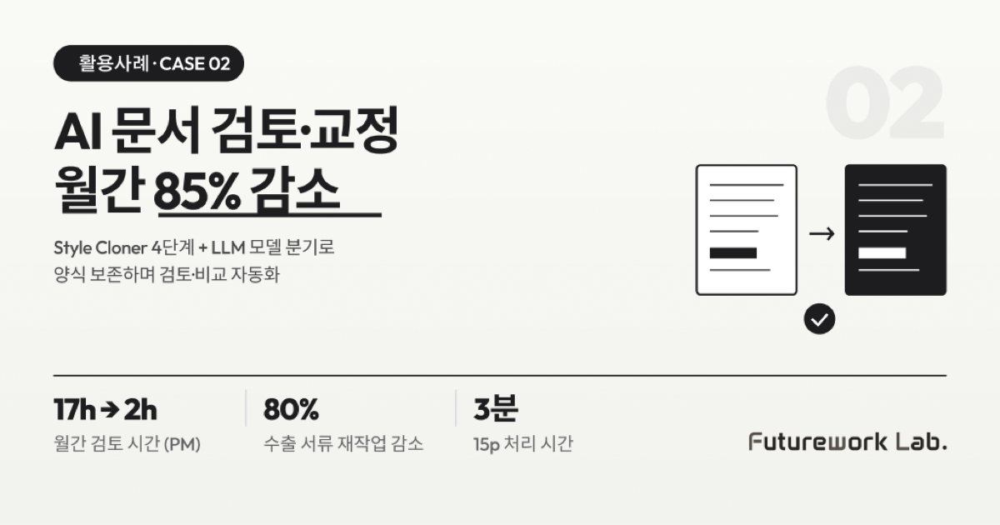

본 사례는 화장품 ODM·화공플랜트 PM 기업 천산과 함께 진행한 AI 문서 검토·교정·비교 에이전트 프로젝트를 기반으로 정리했습니다. PM 1인이 17시간 근무 후에도 추가 작업을 해야 했던 문서 검토 업무를, 핵심 인력이 판단과 승인에 집중할 수 있도록 재설계한 과정을 공유합니다.
왜 문서 검토가 병목이었는가
이 회사는 화장품 ODM 사업과 함께 화공플랜트 PM 업무도 수행합니다. 두 사업 모두 문서 처리량이 매우 많고, 다음 4가지 문제가 동시에 발생하고 있었습니다.
- PM 업무 과부하: PM 1인당 700억 규모 공사를 담당하며, 해외 협력업체의 Vendor Monthly Report 50~200페이지를 17시간 근무 후 추가로 검토해야 했습니다. 매월 "소설책 수준" 두께 리포트를 전체 다시 읽어야 변경점을 파악할 수 있는 구조였습니다.
- 수출 서류 오류: 인보이스, 패킹리스트, 수출 신고서 작성 시 오탈자·품명 불일치 등 오류가 발생해 하루 종일 재작업이 빈번했습니다.
- 정합성 미검증: 인보이스와 패킹리스트 간 수량·단가·날짜 불일치를 사람이 식별하기 어려웠습니다.
- 양식 통일 불가: 고객사마다 문서 양식이 상이해 통합 관리가 불가능했습니다.
핵심 전환 — "생성"이 아닌 "개선"
고객사 대상 사전 조사 결과, 문서를 제로부터 만드는 니즈보다 기존 양식을 기반으로 검토·수정·보완하는 니즈가 압도적이었습니다. 이 깨달음은 솔루션 방향을 완전히 바꿨습니다. 새로 쓰는 AI가 아니라, 기존 문서를 점검하고 정확도를 높이는 AI가 필요했던 것입니다.
3가지 핵심 기능 (PoC 범위)
| 기능 | 상세 |
|---|---|
| A. 문서 검토·피드백 | 오류·누락·개선점 자동 식별 → 피드백 리포트 생성 |
| B. 오탈자·맞춤법·표현 오류 | 문서번호·단위 불일치·표현 비일관성 검출 + 수정안 제시 |
| E. 문서 버전 비교 | 이전·현재 버전 차이 자동 추적·요약 |
기술 — Style Cloner 4단계 파이프라인
가장 어려웠던 부분은 "AI가 수정한 결과물이 원본 양식을 그대로 유지해야 한다"는 요구였습니다. 이를 위해 4단계 파이프라인을 설계했습니다.
- Reference Parsing: DOCX 내부 styles.xml 파싱 → style_spec.json 생성
- Content Mapping: LLM이 단락별로 의미 태깅 (섹션·표 인식)
- Template Injection: python-docx + 스타일 메타데이터로 DOCX 재생성
- Output Validation: 서브에이전트가 출력 문서 검증 → 불일치 시 재시도
또한 비용 최적화를 위해 LLM 모델 분기를 적용했습니다. 50페이지 이하 문서는 GPT-4o, 100페이지 이상 대용량 문서는 GPT-5 mini로 처리하여 정확도와 비용을 동시에 확보했습니다.
4가지 허들과 해결 과정
| 허들 | 문제점 | 해결 |
|---|---|---|
| ① 대용량 PDF LLM 컨텍스트 초과 | 50~200페이지 문서를 한 번에 처리하기 어려움 | 문서 분할(목차 기반/사용자 지정) + 청크 병렬 처리 + 모델 분기 테스트 |
| ② 번호 체계(numbering.xml) 미지원 | python-docx 라이브러리가 문서 번호 체계를 공식 지원하지 않음 | 1주차 Spike(빠른 검증)로 XML 직접 조작 가능성 검증, 불가 시 번호 체계 범위 명시 제외 |
| ③ 양식 범위 정의 모호 | 레이아웃 양식(픽셀·폰트)과 구조 양식(섹션·번호) 구분 불명확 | PoC 전 고객사와 "구조 양식 보존"으로 사전 합의 (픽셀 위치 보장 X, 섹션·번호는 보존) |
| ④ 실문서 확보 (NDA) | 실제 검사 문서 약 200페이지 확보 필요 | 비밀유지계약(NDA) 체결 전 보유 샘플로 테스트, 체결 후 실제 문서 투입 (단계적 접근) |
결과 — 정량 개선 수치
| 지표 | 기존 | 개선 | 비고 |
|---|---|---|---|
| 월간 리포트 검토 시간 (PM) | 17시간+ | 2~3시간 | 약 85% 감소 |
| 수출 서류 재작업 시간 | 하루 | 1~2시간 | 약 80% 감소 |
| 누락 항목 식별 정확도 | 수작업 | 90% 이상 | — |
| 오탈자 검출 정확도 | 수작업 | 85% 이상 | — |
| 변경점 식별 정확도 | 전체 재독 | 80% 이상 | — |
| 처리 시간 (15페이지 기준) | 수시간 | 3분 이내 | — |
AX Flow와의 연결 — Connect · Execute · Govern 레이어
본 사례는 AX Flow의 4-Layer 운영 구조 중 Connect, Execute, Govern 세 레이어가 동시에 작동한 사례입니다. Connect 레이어가 PDF·DOCX 등 다양한 포맷의 문서를 단일 입력 인터페이스로 받고, Execute 레이어의 멀티 에이전트 파이프라인(Style Cloner 4단계)이 검토·교정·비교를 순차 실행합니다. 마지막 Output Validation 서브에이전트는 Govern 레이어가 담당하는 부분으로, 출력 문서의 양식 보존과 정합성을 자동 검증해 사람의 추가 검토 부담을 줄입니다. 새 문서 양식이나 신규 검사 항목이 추가되어도 같은 4-Layer 위에서 확장 가능한 구조입니다.
해당 사례 시사점 3가지 — 문서 AI
첫째, 본 사례에서는 "생성"이 아닌 "개선"이 진짜 니즈였습니다. 사전 조사 결과 빈 종이를 채워주는 AI보다, 이미 만들어진 문서의 오류와 누락을 잡아주는 AI에 대한 수요가 더 컸습니다. 다만 모든 현장이 같은 우선순위는 아니며, 사업 도메인·문서 종류·업무 단계에 따라 "생성"이 우선될 수도 있습니다. 도입 전 현장의 실제 작업 흐름을 먼저 진단하는 것이 안전합니다.
둘째, 양식 보존 범위는 PoC 전에 합의해야 합니다. 픽셀 단위 레이아웃까지 약속하면 PoC가 끝나지 않습니다. "구조 양식 보존"이라는 명확한 기준이 사업의 성공과 실패를 가릅니다.
셋째, 비용은 모델 분기로 잡습니다. 50페이지 이하와 100페이지 이상에서 같은 모델을 쓰면 비용 효율이 깨집니다. 문서 길이 기반 분기 한 줄이 운영 비용을 크게 좌우합니다.
검토와 교정에서 핵심 인력이 해방되면, 그 시간은 새 안건 발굴과 고객 응대에 재투입됩니다. PM 1인이 처리할 수 있는 공사 규모 자체가 바뀝니다.
함께 읽으면 좋은 글
- AI 기반 생산 스케줄 자동 추천 — 우선순위 배정 60배 단축
- 제조 공정 조건 최적화 — 김 제조 불량률 84% 감소, 연 9,800만 원 절감
- 제조 특화 RAG 지식 그래프 — 비정형 문서를 검색 가능한 지식으로
- AI 상용화 지원사업 — 과제당 최대 30억, 스마트공장 다음 단계
본 사례는 AX Flow Usecase 자료 p.3~4 (Case 2) 기반으로 작성되었습니다.
#AI문서검토 #AI교정에이전트 #문서비교AI #VendorMonthlyReport #수출서류자동화 #StyleCloner #DOCX양식보존 #제조PM업무자동화 #문서AI #PM업무경감